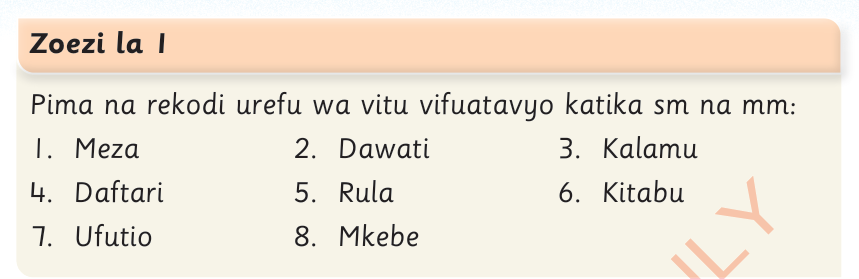
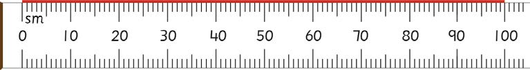
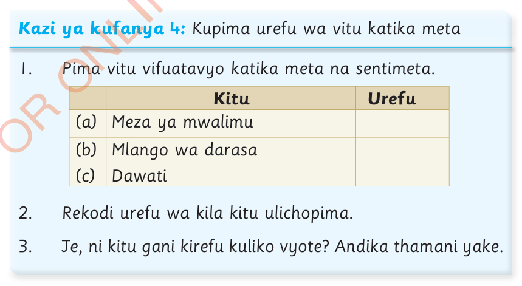

Zoezi la 1
Pima na rekodi urefu wa vitu vifuatavyo katika sm na mm:

Kipimo cha meta
Kipimo cha meta ni cha msingi katika kupima urefu.
Kipimo hiki hutumika kupima vitu kama vile urefu wa chumba cha darasa.
Urefu wa meta moja ni sawa na sentimeta 100, au kwa kifupi ni m1 = sm 100.
Mchoro ufuatao unaonesha rula yenye urefu wa sentimeta 100 au meta moja.

Kazi ya kufanya 4:Kupima urefu wa vitu katika meta
1.Pima vitu vifuatavyo katika meta na sentimeta.
| Kitu | Urefu | |
|---|---|---|
| (a) | Meza ya mwalimu | |
| (b) | Mlango wa darasa | |
| (c) | Dawati |
2.Rekodi urefu wa kila kitu ulichopima.
3.
Je, ni kitu gani kirefu kuliko vyote?
